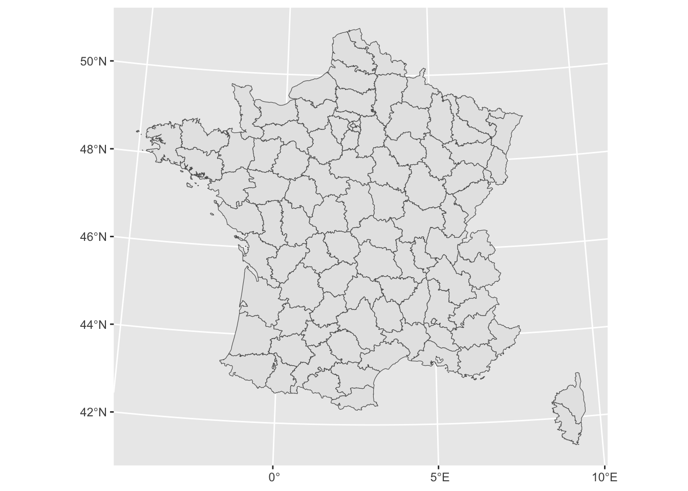
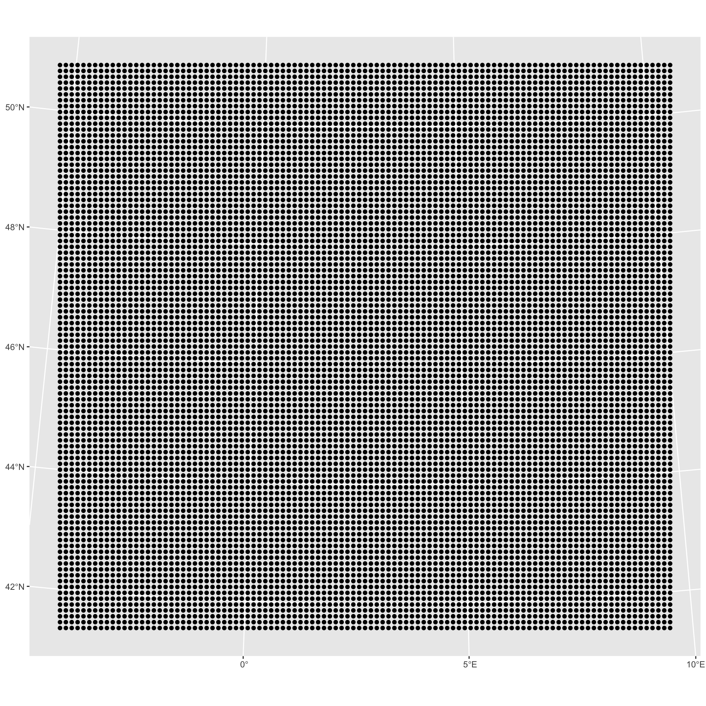
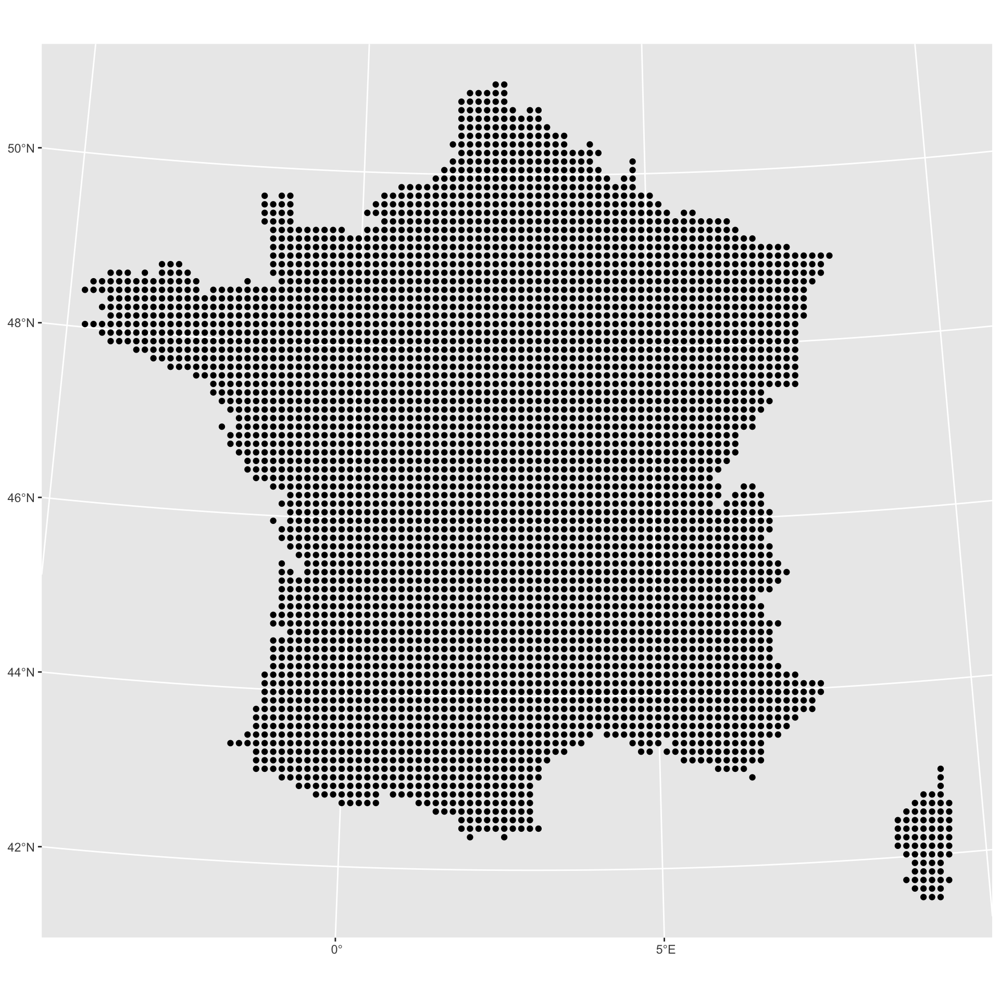
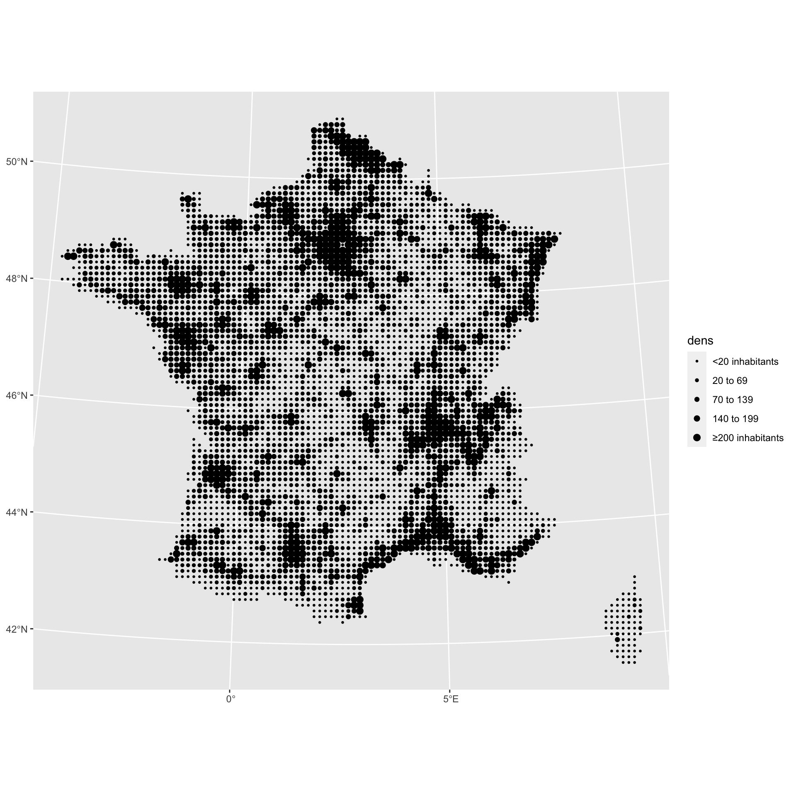
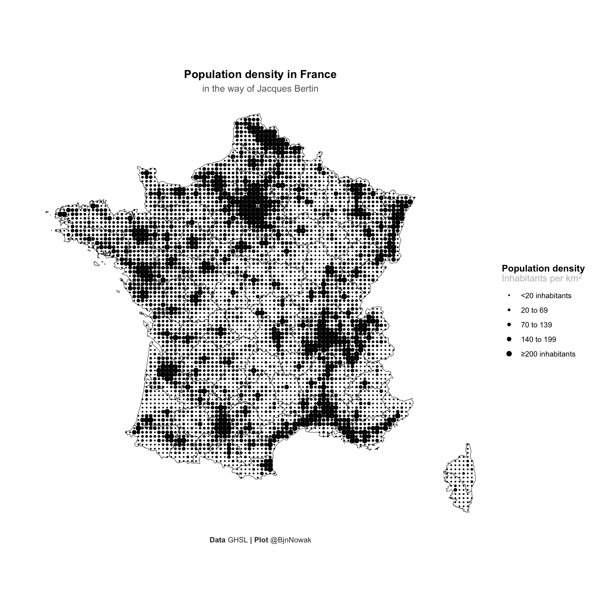

The goal of this tutorial is to show
how to transform maps into valued points in the way of Jacques
Bertin:

This tutorial will show you how to recreate a similar map of population
density in France with R. Compared with Jacques Bertin’s work, we’ll be
taking advantage of the new data available by starting from a raster
(with population densities per pixel), whereas the original map was
based on population densities per department (see map above).
1. Load data
To create our population density map in the way of Jacques Bertin, we will need the following packages:
library(tidyverse)
library(terra) # For raster population file
library(tidyterra) # To plot terra rasters with ggplot()
library(sf) # For French department vector
library(ggtext) # To customize plot textFor this tutorial, I uploaded a basemap of French departments and a raster of population density for France. Population density has been downloaded from the Global Human Settlement Layer. Data may loaded directy in R as shown below:
# France map
fr <- sf::read_sf('https://github.com/BjnNowak/bertin_tuto/raw/main/map/france_sport.gpkg')
# Population density in km2
pop <- terra::rast('https://github.com/BjnNowak/bertin_tuto/raw/main/map/france_pop_l93_2.tif')
# Rename raster band to "pop"
names(pop) <- "pop"France departments is a vector layer (sf object) that may be plotted with geom_sf():

France population density is a raster layer (SpatRaster object) that may be plotted with geom_spatraster():

On the map of population density, you can already see one of the problems we’ll have to deal with: a strong heterogeneity of population density between the Paris region and the rest of France. But we’ll come back to this later…
2. Data preparation
We must first reduce the number of pixels in the raster.
If you have applied the above code, you may have seen a message telling you that the raster has been compressed for the plot (limitation of the number of pixels displayed). Indeed, the number of pixels in the raster is relatively large:
## [1] 1066## [1] 1148A map with valued points will not be legible with such a large number of points. So, before converting pixels into points, we will degrade the resolution of the raster. A number of 100 points per side to be represented seems reasonable. Let’s calculate the aggregation factor corresponding to this resolution:
We can now degrade the resolution of the raster by the corresponding factor:
# Aggregate to 100 rows
pop_agg <- terra::aggregate(
pop, fact = factor,
fun = "mean", na_rm=T
)
# Replace potential NAs by 0
pop_agg[is.na(pop_agg)] <- 0Now that the raster is at the right resolution, we’re going to extract the centroid of each pixel. This is a two-step process:
convert the raster to tibble;
convert the tibble obtained into a point vector.
# 1. Convert raster to tibble
pop_tib <- as_tibble(
pop_agg,
xy = TRUE, # Get centroid of each cell
na.rm = TRUE
)
# 2. Convert tibble to point vector (sf object)
sf_pop <- pop_tib%>%
st_as_sf(
coords = c("x","y"), # Columns with longitude/latitude
crs= 2154 # Set CRS (here Lambert-93)
)Let’s take a look to the resulting vector:

As you can see, we’ve also kept the points outside metropolitan France. In this case, this comes from replacing all null values with 0. But, as we have a spatial object, this can easily be corrected by an intersection:
# Keep only points inside metropolitan France
sf_pop_metro <- st_intersection(sf_pop, fr)
ggplot(sf_pop_metro)+
geom_sf()
Almost there! When we first plotted the population density map as a raster, I told you that we’d be coming back to the problem of strong population disparities between the Paris region and the rest of the country. This will simply be done by creating population density classes (to ensure that the points in the Paris region are the only ones to emerge).
3. Make map!
We are now ready to plot the map. As you may have already guessed, we’re going to vary the size of the points using the density class attribute that we just created:
ggplot()+
geom_sf(
data=sf_pop_metro,
mapping=aes(size=dens,geometry=geometry)
)+
scale_size_manual(
values=c(0.5,1,1.5,2,2.5),
label=c("<20 inhabitants","20 to 69","70 to 139","140 to 199","≥200 inhabitants")
)
Finally, several modifications can be made to improve the look of the map:
ggplot()+
# Add base map with French departments
geom_sf(
fr,
mapping=aes(geometry=geom),
color="black",
fill="white"
)+
geom_sf(
sf_pop_metro,
mapping=aes(geometry=geometry,size=dens),
# Use a point with a border AND a fill
pch=21,color="white",fill="black",stroke=0.05
)+
scale_size_manual(
values=c(1,1.5,2,2.5,3),
label=c("<20 inhabitants","20 to 69","70 to 139","140 to 199","≥200 inhabitants")
)+
# Customize labels
labs(
title="**Population density in France**",
subtitle="in the way of Jacques Bertin",
size="**Population density**<br><span style='color:grey'>Inhabitants per km<sup>2</sup></span>",
caption="**Data** GHSL **| Plot** @BjnNowak"
)+
theme_void()+
theme(
plot.margin = margin(1,1,1,1,"cm"),
plot.background = element_rect(fill="white",color=NA),
legend.position = "right",
legend.title = element_markdown(),
legend.text = element_text(),
plot.title = element_markdown(hjust=0.5),
plot.subtitle = element_text(hjust=0.5,color="grey40"),
plot.caption = element_markdown(color="grey20",hjust=0.5)
)
If you are interested in further applications of this type of map, I have made a R package to easily transform vector or raster maps into valued points.
Author
Benjamin Nowak
Data
Global Human Settlement Layer